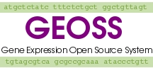

|  | GEOSS Administrator Guide |
Install Guide Admin Guide User Guide Org Curator Guide Developer Guide
This documentation describes how to administer the GEOSS system.
Administrator Guide Table of Contents:
-
1.0 Administrator Home: The Administrator's Configuration Tool
-
2.0 Administrator Command Line Tools
-
3.0 FAQ
Administrator's Guide: Contents
1.0 Administrator Home: The Administrator's Configuration Tool
Graphical administration tools are available for GEOSS and can be accessed via the "Admin Home" page. When an administrator logs in, they are immediately taken to Admin Home. The majoirty of administrative tasks can be accomplished from this location, but there are also command line scripts for most tasks to facilitate scripting of administration tasks.Back to TOC
- The installation information link provides details about the GEOSS installation on your system. This page is strictly informative in nature and may be used to diagnose installation difficulties. It reports the build parameters of the system, the installed versions of required software, whether the permissions on essential directories are correct, the currently loaded layouts, and the currently loaded analyses.
- The "Configure GEOSS" page may be used to set the runtime configuration variables for your GEOSS implementation. This should be done directly after an installation. You may occasionally wish to update parameters, but they should only require seldom changes (if ever) after installation. A brief description of each parameter follows:
- WWW Host: This is the FQDN of the server that GEOSS is installed on.
- Additional Path Information: If you did not set your DocumentRoot to /var/www/html/geoss/site, you will need to enter additional path information. That path information should contain the path from HTML_DIR to the site directory. For instance, if your DocumentRoot is /var/www/html, you would set your additional path information to /geoss/site.
- Organization Name: This is the name of the organization installing the GEOSS system. This value is used for display purposes only.
- Curator Email: This is the email address for the curator who should receive GEOSS mail, such as requests for order creation.
- Public Data Admin Email: This is the email address of the user who will receive requests to publish data. Users can request that their data be published, but for security reasons, the request needs to be reviewed. The Public Data Admin receives those requests, reviews them, then confirms that data should be published.
- Administrator Email: This is the email address of the administrator who installs and maintains GEOSS. GEOSS provides this address for those who have questions about the installation.
- Alternate Curator Email: This contains the email addresses of additional users who need to review order requests.
- Chip Data Path: This specifies the location of chip data files. When the curator attempts to load data, the system will look for the data files in this location. The user running the web server needs to have read permission on this directory.
- General Inactivity Logout: This specifies the number of inactive minutes before a general (non-curator) user is automatically logged out.
- Curator Inactivity Logout: This specifies the number of inactive minutes before a curator user is automatically logged out.
- Administrator Inactivity Logout: This specifies the number of inactive minutes before an administrator user is automatically logged out.
- Add curators to all groups by default: If selected,
this will cause new curators to be added to all groups when the curator
user is added. Additionally, when new groups are added, existing curators
will automatically be added to the group.
This feature is not fully implemented and will be completed in the next release.
- Bug Report Url: This URL specifies a link that users can use to report bugs. It defaults to the GEOSS development team's installment of bugzilla and shouldn't be changed unless you wish to track bugs separately on your installation.
- Header/Footer Link Text: Each installation has the ability to add a custom link to the navigational controls. This is the text that will be displayed for that link.
- Header/Footer Link Url: Each installation has the ability to add a custom link to the navigational controls. This is the url of the link.
- Custom Home Page Description: Each installation has the ability to add a custom home page description. This description will appear on the site home page prior to the generic GEOSS description.
- Custom News Item #1 & #2: Each installation can configure custom "news items" that can be used to inform users of periodic events such as training sessions or GEOSS related publications or activities. Back to TOC
- This page allows the administrator to add a user. Information on manadatory fields is provided here:
- Login Name: This is the user's login name. They will use it to log in to GEOSS.
- Initial Login Password: This is the user's password. They will use it to log in to GEOSS initially. Users should be encouraged to change their password after their initial login. Passwords can contain any non-whitespace characters and must be longer than 6 characters.
- Confirm Initial Login Password: This must be the same as the Initial Login Password.
- User Type: This field indicates the type of user.
For a description of the different types of users, see What
kind of users are there?
- PI Login: This is login name of the Principal Investigator (PI) associated with the new user. All users must have a PI. A user may be their own PI. Typically, an experiment would be owned by the PI, but the associated user might be the one to enter configuration information into GEOSS. Typically administrators and curators are their own PI.
- Typically there should be no need to remove a user. Most users who no longer have access to the system will be disabled. However, if you have added a user with an incorrect login name, you may deleted and re-enter the user. This will need to be done before the user uses the account, as users who own data, or who are PIs for other users, can not be deleted.
- If a user should no longer have log in privileges to the system, but owns data, they need to be disabled. Once they are disabled, they will no longer be able to login. If they are currently logged on when they are disabled, they will be able to continue to use the system until they logout or their session expires.
- In the unlikely event that you need access to a disabled user's account, you can re-enable the account. You will need to set the type of the user. For a description of the different types of users, see What kind of users are there? Back to TOC
- The administrator can change the password of any user. Simply select the target user and set the new password. The password can contain any non-whitespace characters and must be 6 or more characters in length.
Back to TOC
All other add user fields are optional, although it is highly recommended that the user's email address be entered. The user will be emailed by the system when significant events occur, such as their account being created, their order request being fulfilled, or their analysis completing.
Most of the other fields are self-explanatory, with the exception of "Cancer Center Member". This field impacts the Curator's Billing Report. Cancer center members receive a discount when purchasing chips and the report will reflect the discount if this field has been correctly configured.
Back to TOCBack to TOC
Back to TOC
Back to TOC
Back to TOC
- This script is intended to be run after a make install is performed. If you install using the GEOSS rpm, this script is run automatically. If you install manually, you can use this script after you do a "make install". This script initializes the database tables, adds the administrator user, adds layouts and adds analyses. There is no equivalent of this command available from Admin Home, as you won't be able to get to Admin Home until after this command has been run. For usage information on the script, run "perldoc geoss_initialize".
- This script allows a user to be added from the command line. The individual running the script needs to be able to provide the database password. For usage information, type "geoss_adduser --help".
- This script can be used to load an Affymetrix chip layout. For usage information, type "geoss_loadaffylayout --help".
- This script can be used to add an analysis to the system. It will extract information from the cfg file for the analysis and appropriately populate database tables. Prior to running this script, the analysis directory and files need to be in $WEB_DIR/site/webtools/analysis. For usage information on the script, run "perldoc geoss_add_analysis".
- This script can be used to remove an analysis from the system. Typically analyses should not be removed. In order for researchers to reproduce their analysis results, they need to be able to run the same version of an analysis on their data. However, if you are adding your own analyses, you may need to remove them to make changes while testing them. Also, you may choose to remove an analysis that no one is using that you do not want on your system. For usage information on the script, run "perldoc geoss_rm_analysis".
Back to TOC
Back to TOC
Back to TOC
Back to TOC
Back to TOC
Back to TOC
- This page contains links to all activities that administrators perform. While regular users will use "Member Home" as the basis page for most of their work, administrators will use "Admin Home". Users who are not administrators do not have access to activities performed by administrators, and will not get a link to "Admin Home" in their navigation bar.
- Logging in as an administrator is the same as logging in as a regular user. Provide your login and password in the login section of the site home page.
- Administrator's can change their password in two ways. They can log on and change their password via the Change user password link from "Admin Home", or through the "Change my password" link from "Member Home".
- 3.2 User Administration Back to TOC
- There are currently four supported user types: administrator, curator, public, and experiment_set_provider.
- Public User:
Public Users can use GEOSS to analyze data using analysis trees. Data can be uploaded or extracted from publicly available data sets. Data files, including analysis results can be shared with other users. Accounts are free, but users must provide a valid email address. Once you request an account, your login information will be mailed to the specified email address. - Member Users:
Member Users can use GEOSS to define studies and place orders with the array center. Once an order is processed, the data is loaded into GEOSS. From there, member users can download or analyze their data. Results may be shared with other users. Additionally, all chip data and analyses results will be backed up and secured. In order to get a member user account, your identity must be verified. You will need to fill out detailed contact information so a GEOSS administrator can contact you. - Array Center Staff Users:
Array Center Staff Users are responsible for fulfilling GEOSS orders. They perform gene chip experiments and load resulting data. These accounts are only available to staff. - Administrator:
Administrators can configure GEOSS and perform all operations necessary to maintain a GEOSS installation. This includes managing users, layouts, analyses, and MIAME data. These accounts are only available to GEOSS staff. - Administrators can add users via the Add a user link in "Admin Home".
- Administrators can remove users via the Remove a user link in "Admin Home".
- If the user owns any data, you will not be able to remove them. If this is the case, their login won't even show up in the drop down list for users that you are allowed to remove.
- Users can be disabled via the Disable User link from "Admin Home".
- Users can be enabled via the Enable User link from "Admin Home".
- User's passwords can be changed via the Change user password link from "Admin Home".
- 3.3 Layout Management Back to TOC
-
3.3.1 What is a layout?
A layout is information pertaining to an Affymetrix GeneChip probe array. The layout information describes which probes belong to probe sets on the array. Currently GEOSS only supports layouts for the Affymetrix technology. However, work is under way to incorporate cDNA data and its associated layouts. -
3.3.2 Where do I get layouts?
Several of the Affymetrix layouts have been bundled with the GEOSS product. The text files will be located in the /var/lib//geoss/layout in a default installation. To confirm the location on your installation, administrators can check the Build Parameters under "GEOSS Installation Information" in Admin Home. directory.
If the layout you need is not located in this directory you will need to go to the Affymetrix website to download the layout.
Click on the hyperlink for the array of interest and scroll down to the section "NetAffx Annotation Files." Choose the .CSV file.
This file will contain more columns than are needed for our system. Eliminate all columns with the exception of GeneChip Array, Probe Set ID, Representative Public ID, Sequence Type, and Target Description. Columns should be in this order.
Save file as a text file making sure that the first row is actual data. To do so remove column headings from the text file. -
3.3.3 How do I load a layout?
Layouts should be in text format for loading. Currently you must run the geoss_loadaffylayout.pl script from the command line. See script details for command line syntax.
An admin tool is being developed for this purpose and will be included in the next version of GEOSS.
Back to TOC
-
3.3.4 How do I unload a layout?
Affymetrix layouts are loaded into three tables in the following order: arraylayout, al_spots, and usersequence feature. The only way to remove a layout is to do so manually. You must identify all the fields first and then delete in reverse order or the foreign key constraints will not allow the deletion. The arraylayout table will have only one record, however, the al_spots and usersequence feature tables will have many. Identify the records by associating the foreign key relationships and then begin your delete. As always it is a good idea to have a backup (pg_dump) done just in case.
NOTE: Removing layouts should not typically be required. -
3.3.5 Why can't I unload a layout?
Most likely you are attempting to remove a layout from the arraylayout table before deleting the associated records in the usersequencefeature and al_spots tables. You must do the deletes in the reverse order from which the tables are populated (see 3.3.4). The foreign key constraints will keep you from leaving orphan records in any child tables.
Another possibility is that you are attempting to delete a layout that has already been associated with some data (arraymeasurement table). Check the foreign key relationship between the arraymeasurement table and the arraylayout table, al_fk and al_pk respectively..
Back to TOC - 3.4 Analysis Management Back to TOC
- An analysis is a function performed on input data that produces output data. Typical analyses perform statistical calculations and format data. Analysis modules can be written in many languages, as long as they can be successfully run from the command line. Current analyses are written in Perl and R. If the output from one analysis can be used as input to another analysis, they can be chained together in a tree.
- Analyses are developed by GEOSS developers. As new analyses are created, they will be included in system updates. It is possible to write your own analyses, but you will need to have GEOSS source installed to do this. If you have an analysis you would like to have included in GEOSS, please contact the GEOSS developers.
- Currently available analyses are loaded by the installation scripts, so you shouldn't need to load new analyses unless you write your own. Analyses are loaded via the geoss_add_analysis command.
- Analyses that are not currently in use can be removed using the geoss_rm_analysis command.
- Once a researcher has published their experiment results, they may wish to make the data available to the public. To do this, they enter relevant MIAME information about the experiment and then request that it is published. It is then available to all web users by clicking on the "View Public Data" link from the site home page.
-
3.5.2 What is the administrator's role in making data public?
Data is not instantly available when a user submits it for publication.
An administrator needs to verify that the information should be published.
This is because it may not be the principal investigator (the owner
of the data) who chooses to publish it. In that case, the PI is emailed
by GEOSS, informing them that their data is about to be published. If
they do not wish it to be published, they can contact the administrator
who can prevent the publication of the data. - Currently the public data admin receives an email describing the steps to make data public. We hope to have a link to do make data public available in Admin Home in the next release.
- If data is published that you wish to remove from the site, it can be removed by removing the appropriate files from the public data directory. To determine the public data directory, check the "GEOSS Install Information" link from "Admin Home". Public data is in USER_DATA_DIR/public_data. You will need to find the directory named after the PI of the data you wish to remove. If the PI has only published one set of data, you may remove the entire directory. If the PI has published more than one set of data, you will need to remove the appropriate files from inside the directory. The set of files should include an indexrec file, an zip files of all, cel, chp, and exp data. The filenames will include the miame name of the data.
Back to TOC
Back to TOC
Back to TOC
Back to TOC
Back to TOC
Alternatively, administrators may add users using the geoss_adduser command from the command line interface. This command is particularly useful if you need to write scripts that add users.
Back to TOC
Back to TOC
Back to TOC
Back to TOC
Back to TOC
Back to TOC
Back to TOC
Back to TOC
Back to TOC
Back to TOC
Back to TOC
Back to TOC
Back to TOC
Back to TOC
Back to TOC
Back to TOC
Back to TOC
Again, we hope to create a link from "Admin Home" to do this if future development time permits.
Back to TOC